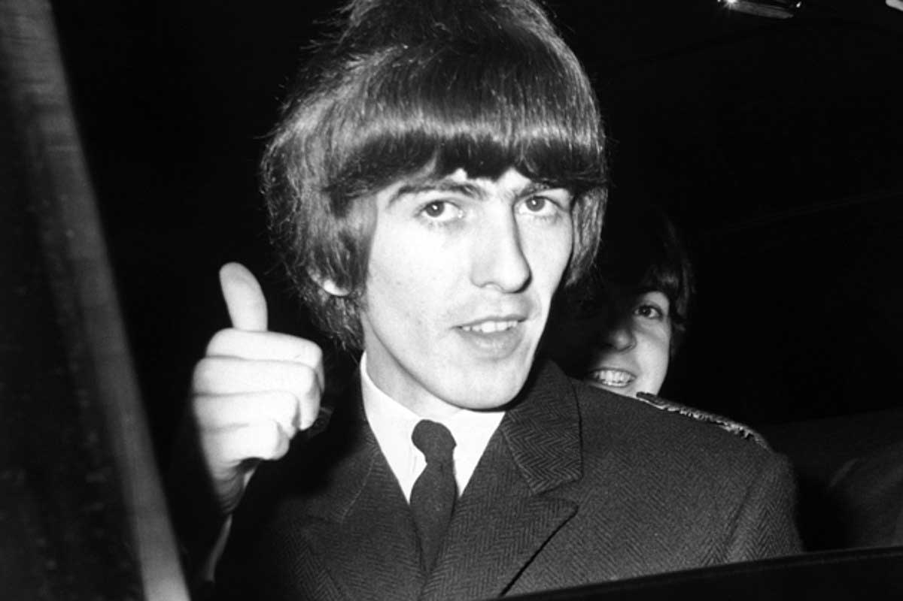

Nació el 25 de febrero de 1943 en Arnold Grove 12, Wavertree, Liverpool.El hermano más pequeño de los cuatro hijos de Harold, que fuera marino mercante, y de Louise, que trabajaba en una verdulería hasta que tras casarse en mayo de 1930 y tener el primer hijo, dejó su trabajo y Harold se convirtió en conductor de autobuses.Cursó estudios en la Escuela Primaria de Dovedale. Los estudios secundarios los realizó en el Instituto de Liverpool.Su primera guitarra fue una de segunda mano que compró a otro muchacho en la escuela.Cuando conoció a John Lennon, su calidad de interpretación era muy inferior al del resto del grupo, llamado por esos tiempo John and the Moondogs. Integrante de la legendaria banda The Beatles. En la grabación de A Hard Day's Night conoció a Pattie Boyd, ex modelo de Mary Quant, con la que contraería matrimonio algunos años después.Editó su primer disco como solista, el triple All Things Must Pass, el mismo año en que los Beatles se separaron. El simple My Sweet Lord, reflejo de su actitud religiosa cada vez más y el Reino Unido. Dio un concierto a beneficio del pueblo de Bangladesh en el que participaron también Bob Dylan, Eric Clapton, Ringo Starr y otros, aunque los fondos recaudados llegaron a su destino pasados más de 10 años.Funda su propio sello discográfico, Dark Horse, con el cual publica 33 1/3 (1976); George Harrison (1979); Somewhere in England (1981), y Gone Troppo (1982), con mediana aceptación todos ellos .El ex Beatle y su esposa Olivia resultaron heridos por arma blanca en la madrugada del 30 de diciembre de 1999, sufrió heridas en el pecho que le causó el intruso, en su mansión de Henley on Thames, al oeste de Londres. Harrison y su esposa forcejearon con el asaltante, al parecer un hombre de 33 años originario de Liverpool y pudieron retenerlo hasta la llegada de la Policía.George Harrison falleció el 29 de noviembre de 2001 en la casa de un amigo en Los Angeles (Estados Unidos) tras someterse a una serie de tratamientos contra el cáncer que padecía desde 1998.